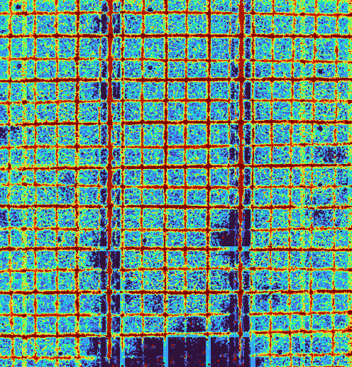
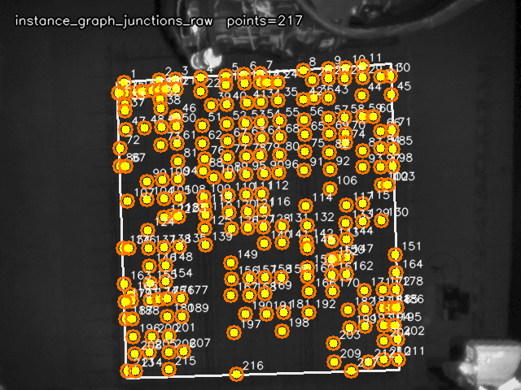
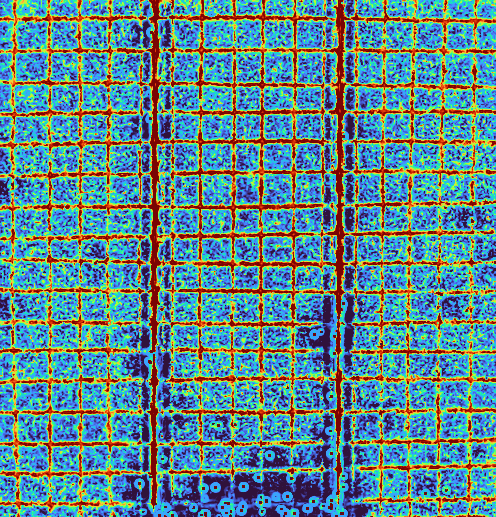
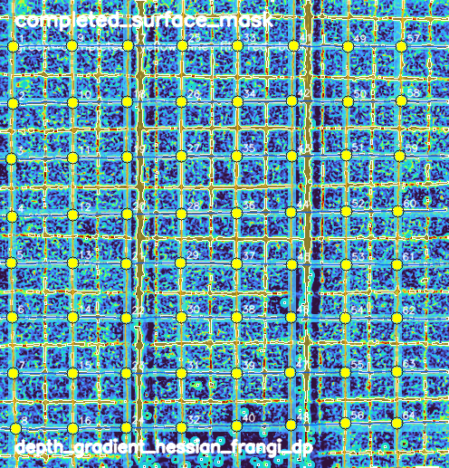
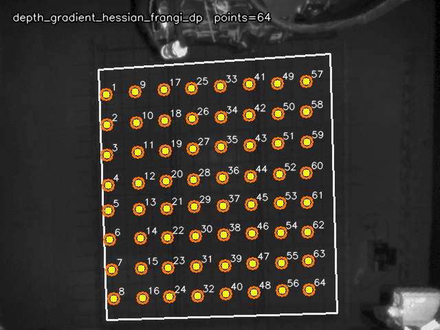

基础响应combined_depth_ir_darkline
基础线族[8, 8]
全量推荐06_surface_ir_assisted_curve
旧 depth-only493 点
instance graph junction931
新方案点数64
combined / fused_instance_response -> Hessian + Frangi 脊线增强 -> binary candidate + skeleton -> completed_surface_mask -> DP 曲线沿局部 ridge 收束 -> 曲线交点输出 -> instance_graph junction 只做验证 / 补召回
方案对比
| 方案 | 点数 | 线数 | 代理分 |
|---|---|---|---|
06_surface_ir_assisted_curve | 64 | [8, 8] | 0.933 |
05_surface_ridge_curve | 64 | [8, 8] | 0.923 |
04_surface_dp_curve | 64 | [8, 8] | 0.922 |
depth_gradient_hessian_frangi_dp | 64 | [8, 8] | 0.919 |
fused_instance_axis_family | 64 | [8, 8] | 0.871 |
completed_surface_intersections | 64 | [8, 8] | 0.871 |
depth_pr_fprg_peak_supported | 64 | [8, 8] | 0.852 |
hessian_axis_family | 64 | [8, 8] | 0.850 |
frangi_axis_family | 64 | [8, 8] | 0.850 |
combined_pr_fprg_peak_supported | 64 | [8, 8] | 0.824 |
03_surface_greedy_curve | 64 | [8, 8] | 0.821 |
instance_graph_junctions_raw | 217 | [] | 0.722 |
current_depth_only_runtime | 493 | [29, 17] | 0.472 |
每一步效果图








